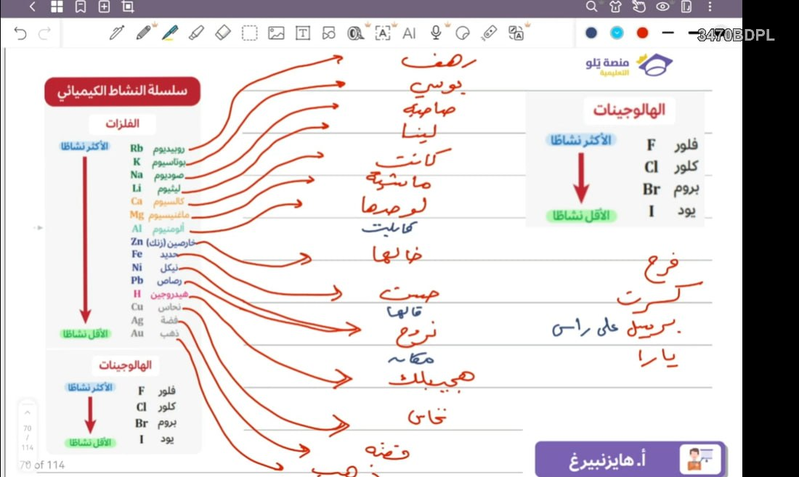

✨ مرجعك الأكاديمي النخبوي
منصة KFUPMYNL
بوابتك للتفوق المطلق
استعرض الاختبارات التفاعلية، القوانين الفيزيائية والكيميائية، والملخصات الشاملة.
🤖 المساعد الذكي للمنصة
✏️ سبورة الحل السريعة
الاختبارات
تدرب على اختبارات الأسئلة المخترعة.
استعرض الاختبارات ←القوانين
جميع القوانين اللي تحتاجها مع بعض التدريبات.
تصفح القوانين والشرح ←الربط
اربط معلوماتك عشان لا تنساها!
افتح قسم الربط ←الملخصات
ملخصات شاملة لكل ما تحتاجه.
استعراض الملخصات ←المهارات
ملف التأسيس و5 اختبارات تفاعلية شاملة لجميع تجميعات المهارات.
ابدأ اختبارات المهارات ←المنهج
كتب الأحياء والفيزياء والكيمياء والرياضيات وأسئلتها.
افتح المنهج الدراسي ←✍️ الاختبارات التجميعية
تصفح اختبارات التجميعات الأصلية المعتمدة.
⚖️ القوانين: الكيمياء والبكرات والمقذوفات والحركة الدائرية
📌 بطاقات الحسابات الكيميائية:
📌 بطاقات وقوانين ميكانيكا البكرات الشاملة:
✍️ اختبار مسائل ميكانيكا البكرات (تفاعلي شامل)
اختبر فهمك لمسائل وحالات البكرات المذكورة في الملف:
📌 بطاقات قوانين ميكانيكا المقذوفات:
📌 بطاقات قوانين ميكانيكا الحركة الدائرية:
⌘ قسم الربط البصري
الجدول الدوري الحديث

الهيكل العظمي البشري

▤ الملخصات الأكاديمية الشاملة
📌 ملخص رياضيات أول ثانوي:
سلسلة النشاط الكيميائي (الفلزات والهالوجينات)

📌 قائمة الأسماء الشائعة الكاملة:
📌 قائمة مشتقات الهيدروكربونات الكاملة:
◎ قسم المهارات (تأسيس واختبارات)
✍️ اختبارات تجميعات المهارات (5 اختبارات تفاعلية شاملة)
اختر الاختبار للحل والتقييم الفوري:
📚 المنهج الدراسي
كتب الأسئلة لجميع المواد. اضغط «عرض الكتاب هنا» لعرضه داخل الصفحة، أو «تحميل» لحفظه على جهازك.